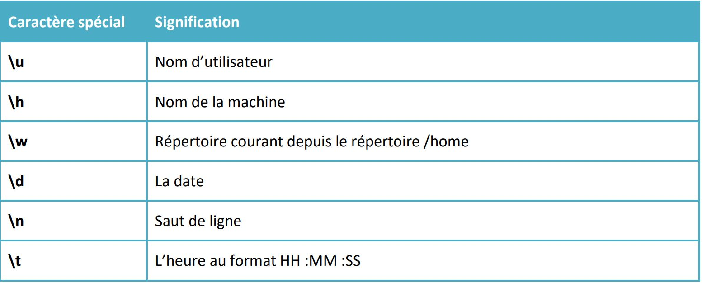
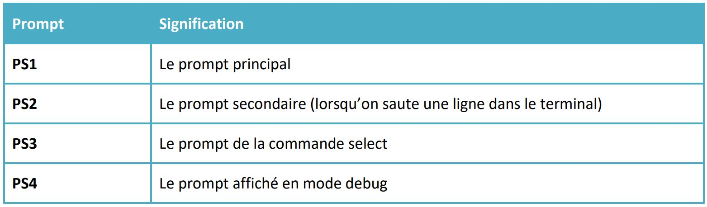
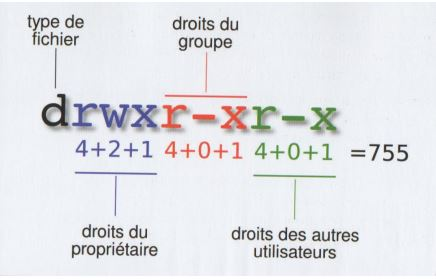
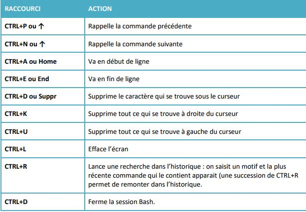
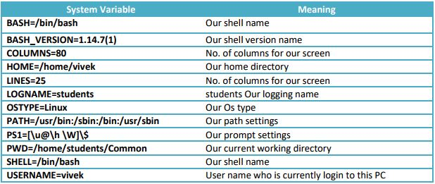

BASH
ludovic.drouineau@isen-ouest.yncrea.fr
CIR3 2017-2018
Ce qui pourrait être utile avant de débuter
Installer Ubuntu sur Windows 10
https://korben.info/installer-shell-bash-linux-windows-10.htmlShell <=> coquille
La coquille qui entoure le système
Un peu d'histoire:
Du bon vieux code C...
http://savannah.gnu.org/projects/bash/Des bugs...
shellsock exploit
env x='() { :;}; echo vulnerable' bash -c "echo this is a test"
Différents shell
- sh
- csh
- tcsh
- bash
- zsh
- ...
Quels shells je dispose ?
more /etc/shellsQuel shell j'utilise ?
echo $SHELLLe système de fichier

Les fichiers de configuration
- login shell
- /etc/profile
- ~/.profile
- non login shell
- ~/.bashrc
Le prompt
$PS1Quelques raccourcis:
Les différents prompts:
Rappel sur les commandes:
commande [options] arguments"[" est une commande
La bible: man
man [–s section] commande - Commandes utilisateur
- Appels système
- Fonctions de bibliothèque
- Fichiers spéciaux
- Formats de fichier
- Jeux
- Divers
- Administration système
- Interface du noyau Linux
Les fichiers:
Complétion automatique
.bashrc
if [ -f /etc/bash_completion ] ; then
. /etc/bash_completion
fi
Historique des commandes
.bash_history
HISTCONTROL=ignoredups #doublons HISTCONTROL=ignorespace #espace HISTTIMEFORMAT= " %D %H :%M " #date HISTFILESIZE=1000 #taille shopt –s histappend #d'une session à l'autre Alias
alias la=’ls –la’ alias cdscript=’cd ~/scripts’ Raccourcis dans le shell
Commande internes et externes
- Exemple de commande interne: cd
- Exemple de commande externe: ls
Les variables d'environnement

~$ echo $PATH
/usr/bin:/bin:/usr/local/bin